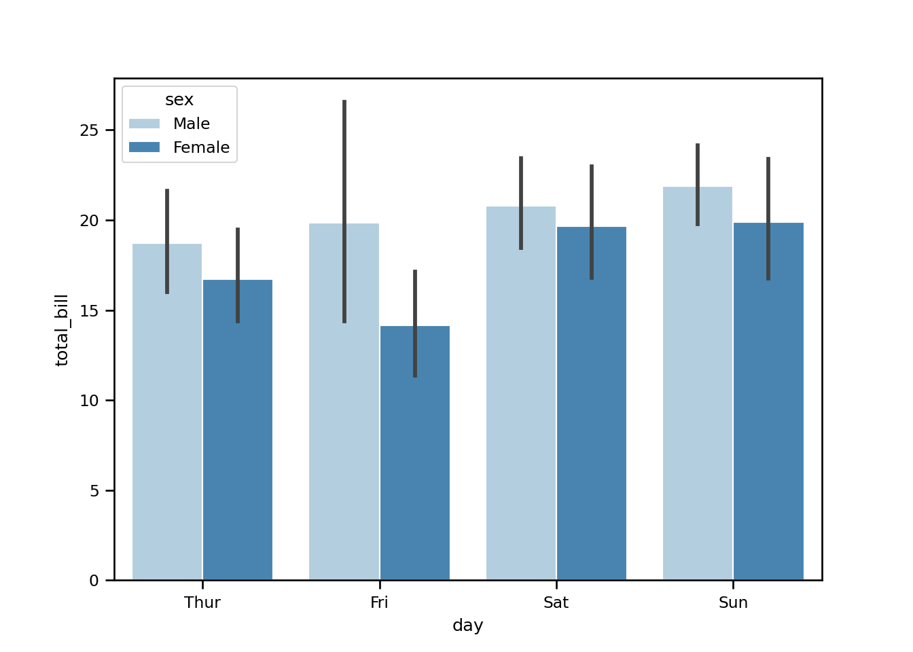
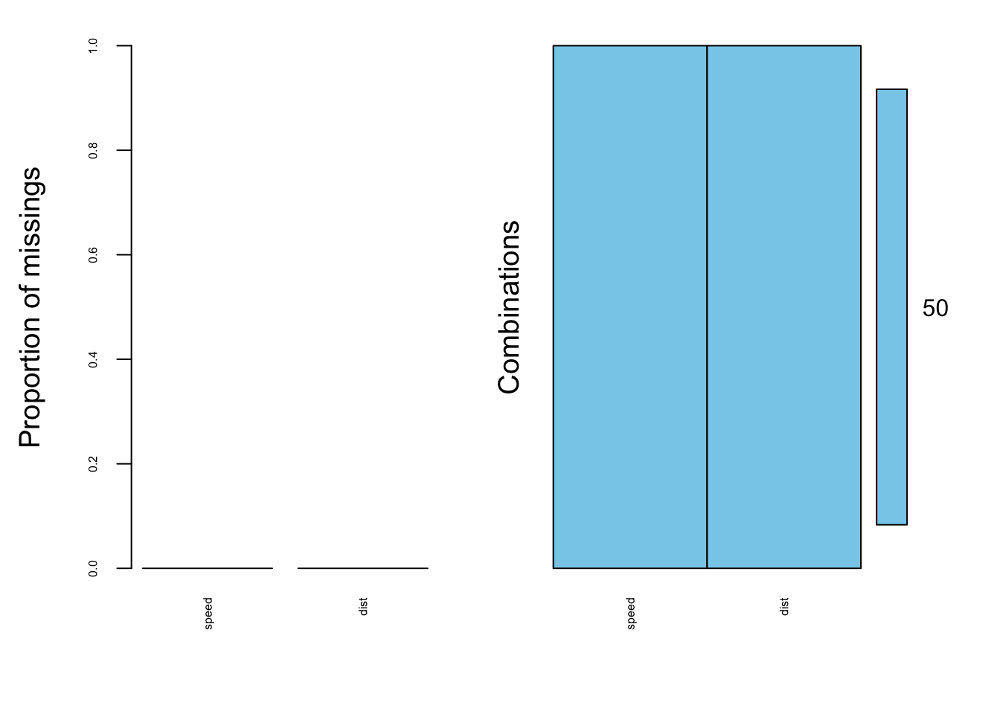
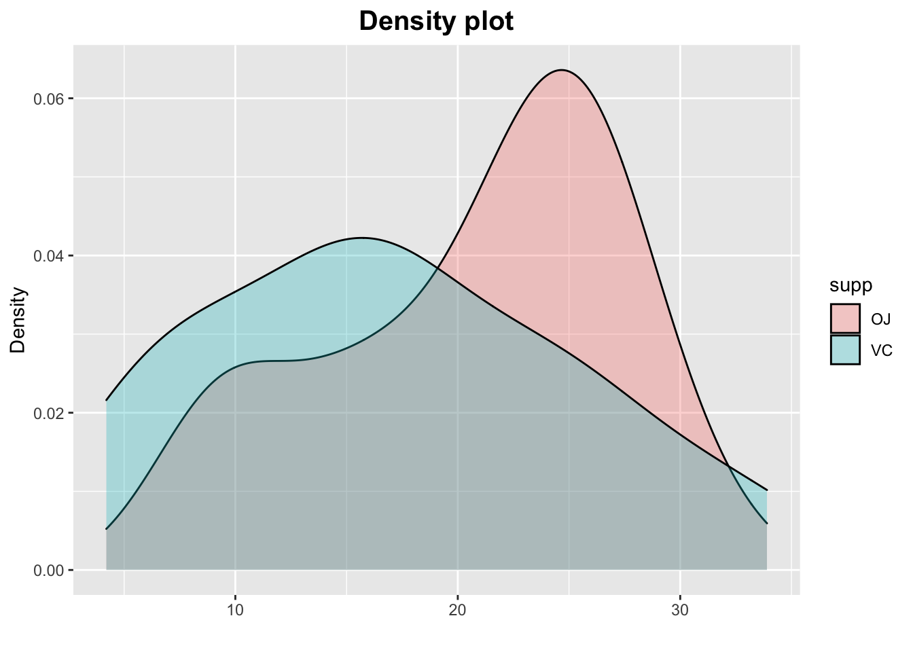

Chapter - 6 Basics Python
y = 5 + 5
y## [1] 10Printing characters
print('Hello, readers!')## [1] "Hello, readers!"Printing numbers
print(15)## [1] 15Printing length of a value
Length = len('Danielle')
print(Length)## 86.1 Data set
Loading the data set & viewing head + tails:
sns.set_context('paper')
tips = sns.load_dataset('tips')
tips.head()## total_bill tip sex smoker day time size
## 0 16.99 1.01 Female No Sun Dinner 2
## 1 10.34 1.66 Male No Sun Dinner 3
## 2 21.01 3.50 Male No Sun Dinner 3
## 3 23.68 3.31 Male No Sun Dinner 2
## 4 24.59 3.61 Female No Sun Dinner 4tips.tail()## total_bill tip sex smoker day time size
## 239 29.03 5.92 Male No Sat Dinner 3
## 240 27.18 2.00 Female Yes Sat Dinner 2
## 241 22.67 2.00 Male Yes Sat Dinner 2
## 242 17.82 1.75 Male No Sat Dinner 2
## 243 18.78 3.00 Female No Thur Dinner 2- Length of the variable
- Shape: Number of rows and number of columns
- Type of variables + basic info
- Descriptive statistics variable
len(tips)## 244tips.shape## (244, 7)tips.info()## <class 'pandas.core.frame.DataFrame'>
## RangeIndex: 244 entries, 0 to 243
## Data columns (total 7 columns):
## # Column Non-Null Count Dtype
## --- ------ -------------- -----
## 0 total_bill 244 non-null float64
## 1 tip 244 non-null float64
## 2 sex 244 non-null category
## 3 smoker 244 non-null category
## 4 day 244 non-null category
## 5 time 244 non-null category
## 6 size 244 non-null int64
## dtypes: category(4), float64(2), int64(1)
## memory usage: 7.3 KBtips.describe()## total_bill tip size
## count 244.000000 244.000000 244.000000
## mean 19.785943 2.998279 2.569672
## std 8.902412 1.383638 0.951100
## min 3.070000 1.000000 1.000000
## 25% 13.347500 2.000000 2.000000
## 50% 17.795000 2.900000 2.000000
## 75% 24.127500 3.562500 3.000000
## max 50.810000 10.000000 6.0000006.2 Matrixes
Series:
Panda series method:
Serie1 = pd.Series(
[4200, 8000, 6500],
index=["Amsterdam", "Toronto", "Tokyo"]
)
Serie1## Amsterdam 4200
## Toronto 8000
## Tokyo 6500
## dtype: int64Python dictionary method:
Serie2 = pd.Series({"Amsterdam": 5, "Tokyo": 8})
Serie2## Amsterdam 5
## Tokyo 8
## dtype: int64Data frame:
Combined_serie = pd.DataFrame({
"Revenue": Serie1,
"Employee_count": Serie2
})
Combined_serie## Revenue Employee_count
## Amsterdam 4200 5.0
## Tokyo 6500 8.0
## Toronto 8000 NaNSub-setting by row:
Combined_serie["Tokyo":]## Revenue Employee_count
## Tokyo 6500 8.0
## Toronto 8000 NaNCreating our own functions:
Saying hello + name
def printing_name(name):
print('Good morning,', name)
printing_name('Danielle')## Good morning, DanielleMultiple arguments:
Saying hello + name + location
def welcome(name, location):
print("Good morning", name, "Welcome to", location)
welcome("Danielle,", "class.")## Good morning Danielle, Welcome to class.Bar plot
sns.set_context('paper')
tips = sns.load_dataset("tips")
tips.head()## total_bill tip sex smoker day time size
## 0 16.99 1.01 Female No Sun Dinner 2
## 1 10.34 1.66 Male No Sun Dinner 3
## 2 21.01 3.50 Male No Sun Dinner 3
## 3 23.68 3.31 Male No Sun Dinner 2
## 4 24.59 3.61 Female No Sun Dinner 4sns.barplot(x = 'day', y = 'total_bill', hue = 'sex', data = tips, palette = 'Blues', edgecolor = 'w')
plt.show()
tips.groupby(['day','sex']).mean()## total_bill tip size
## day sex
## Thur Male 18.714667 2.980333 2.433333
## Female 16.715312 2.575625 2.468750
## Fri Male 19.857000 2.693000 2.100000
## Female 14.145556 2.781111 2.111111
## Sat Male 20.802542 3.083898 2.644068
## Female 19.680357 2.801786 2.250000
## Sun Male 21.887241 3.220345 2.810345
## Female 19.872222 3.367222 2.9444441-hot-encoding:
Transforming categorical features to values from 0 or 1. F.e. You can be from origin: America or Europe. If the observation is from America it receives a 1 for America and a 0 for Europe.
Reading from a csv file with pandas:
import pandas as pd
d = pd.read_csv('~/Documents/Pompeu Fabra BSM/Practical data science/auto-mpg.csv')d.mpg.mean().round() # rounding by amount of decimals## 23.0d.dtypes # describes the type of variables## mpg float64
## cylinders int64
## displacement float64
## hp float64
## weight float64
## acceleration float64
## year int64
## origin int64
## dtype: objectpd.to_numeric(d.hp) # transforms to numerical## 0 130.0
## 1 165.0
## 2 150.0
## 3 150.0
## 4 140.0
## ...
## 387 86.0
## 388 52.0
## 389 84.0
## 390 79.0
## 391 82.0
## Name: hp, Length: 392, dtype: float64len(d) # amount of rows## 392d.shape # amount of rows & columns## (392, 8)d.columns # gives the names of the columns## Index(['mpg', 'cylinders', 'displacement', 'hp', 'weight', 'acceleration',
## 'year', 'origin'],
## dtype='object')mpg = d.mpg # shows me only the values from one variable
mpg = d['mpg'] # alternative way to show only one value
d.head() # shows the first 5 observations of a data set## mpg cylinders displacement hp weight acceleration year origin
## 0 18.0 8 307.0 130.0 3504.0 12.0 70 1
## 1 15.0 8 350.0 165.0 3693.0 11.5 70 1
## 2 18.0 8 318.0 150.0 3436.0 11.0 70 1
## 3 16.0 8 304.0 150.0 3433.0 12.0 70 1
## 4 17.0 8 302.0 140.0 3449.0 10.5 70 1d.tail() # shows the last 5 observations of a data set## mpg cylinders displacement hp weight acceleration year origin
## 387 27.0 4 140.0 86.0 2790.0 15.6 82 1
## 388 44.0 4 97.0 52.0 2130.0 24.6 82 2
## 389 32.0 4 135.0 84.0 2295.0 11.6 82 1
## 390 28.0 4 120.0 79.0 2625.0 18.6 82 1
## 391 31.0 4 119.0 82.0 2720.0 19.4 82 1Basic statistics:
d.mpg.mean()## 23.445918367346938d.mpg.median()## 22.75d.mpg.max()## 46.6d.mpg.min()## 9.0d.mean() # mean for all columns## mpg 23.445918
## cylinders 5.471939
## displacement 194.411990
## hp 104.469388
## weight 2977.584184
## acceleration 15.541327
## year 75.979592
## origin 1.576531
## dtype: float64d.describe().round(2).head() # statistics for the whole data set, rounded to two decimals## mpg cylinders displacement ... acceleration year origin
## count 392.00 392.00 392.00 ... 392.00 392.00 392.00
## mean 23.45 5.47 194.41 ... 15.54 75.98 1.58
## std 7.81 1.71 104.64 ... 2.76 3.68 0.81
## min 9.00 3.00 68.00 ... 8.00 70.00 1.00
## 25% 17.00 4.00 105.00 ... 13.78 73.00 1.00
##
## [5 rows x 8 columns]d[['year']] # defines a list of one variable## year
## 0 70
## 1 70
## 2 70
## 3 70
## 4 70
## .. ...
## 387 82
## 388 82
## 389 82
## 390 82
## 391 82
##
## [392 rows x 1 columns]d[['year', 'cylinders']] # defines a list of multiple variables## year cylinders
## 0 70 8
## 1 70 8
## 2 70 8
## 3 70 8
## 4 70 8
## .. ... ...
## 387 82 4
## 388 82 4
## 389 82 4
## 390 82 4
## 391 82 4
##
## [392 rows x 2 columns]d.year.unique() # gives me the unique values of that column, not the repetitions## array([70, 71, 72, 73, 74, 75, 76, 77, 78, 79, 80, 81, 82])6.3 Filtering a data set
d77 = d[d.year == 77] #filters the data set to all observations that are equal to a certain value of a variable
d77 = d[d.year != 77] #filters the data set to all observations that are NOT equal to a certain value of a variable
d77 = d[d.year <= 77] # filters those that are smaller than a value
d77 = d[d.year >= 77] # filters those that are large than a value
d77 = d[(d.year >= 77) & (d.year <= 90)] # in between certain values
d77 = d[(d.year == 80) | (d.year == 90)] # those from one value OR another
d77 = d[~(d.year == 70)] # excludes the valuesAggregating
dm = d.groupby('year').mean()
dm = d.groupby(['year', 'cylinders']).mean()
dm = d.groupby(['year', 'cylinders']).median()
dm = d.groupby(['year', 'cylinders']).mean()['mpg'] # for selected variables onlyPivot table
d.pivot_table(index='year', columns='cylinders', values='mpg').round()## cylinders 3 4 5 6 8
## year
## 70 NaN 25.0 NaN 20.0 14.0
## 71 NaN 28.0 NaN 18.0 13.0
## 72 19.0 23.0 NaN NaN 14.0
## 73 18.0 23.0 NaN 19.0 13.0
## 74 NaN 28.0 NaN 17.0 14.0
## 75 NaN 25.0 NaN 18.0 16.0
## 76 NaN 27.0 NaN 20.0 15.0
## 77 22.0 29.0 NaN 20.0 16.0
## 78 NaN 30.0 20.0 19.0 19.0
## 79 NaN 32.0 25.0 23.0 19.0
## 80 24.0 35.0 36.0 26.0 NaN
## 81 NaN 33.0 NaN 23.0 27.0
## 82 NaN 32.0 NaN 28.0 NaNd.pivot_table(index='year', columns='cylinders', values='mpg').round().fillna('')## cylinders 3 4 5 6 8
## year
## 70 25.0 20 14
## 71 28.0 18 13
## 72 19 23.0 14
## 73 18 23.0 19 13
## 74 28.0 17 14
## 75 25.0 18 16
## 76 27.0 20 15
## 77 22 29.0 20 16
## 78 30.0 20 19 19
## 79 32.0 25 23 19
## 80 24 35.0 36 26
## 81 33.0 23 27
## 82 32.0 28Creating new columns starting from existing columns
d['nam_of_new_column'] = d.mpg * 2Through the package numpy:
import numpy as np
d['sqrt_of_mpg_2'] = np.sqrt(d.mpg)
d['log(10)_of_mpg'] = np.log10(d.mpg)Dropping / deleting columns
d['double_mpg'] = d.mpg * 2
del(d['double_mpg']) # deleting columns
d.drop(columns=['sqrt_of_mpg_2', 'log(10)_of_mpg', 'nam_of_new_column']).head() # dropping columns## mpg cylinders displacement hp weight acceleration year origin
## 0 18.0 8 307.0 130.0 3504.0 12.0 70 1
## 1 15.0 8 350.0 165.0 3693.0 11.5 70 1
## 2 18.0 8 318.0 150.0 3436.0 11.0 70 1
## 3 16.0 8 304.0 150.0 3433.0 12.0 70 1
## 4 17.0 8 302.0 140.0 3449.0 10.5 70 16.4 Data imputation
pd.to_numeric(d.hp, errors='coerce').head()## 0 130.0
## 1 165.0
## 2 150.0
## 3 150.0
## 4 140.0
## Name: hp, dtype: float64d.hp = pd.to_numeric(d.hp, errors='coerce')
d[d.hp.isna()] # transform values to NA## Empty DataFrame
## Columns: [mpg, cylinders, displacement, hp, weight, acceleration, year, origin, nam_of_new_column, sqrt_of_mpg_2, log(10)_of_mpg]
## Index: []d[-(d.hp.isna())] # delete missing values## mpg cylinders ... sqrt_of_mpg_2 log(10)_of_mpg
## 0 18.0 8 ... 4.242641 1.255273
## 1 15.0 8 ... 3.872983 1.176091
## 2 18.0 8 ... 4.242641 1.255273
## 3 16.0 8 ... 4.000000 1.204120
## 4 17.0 8 ... 4.123106 1.230449
## .. ... ... ... ... ...
## 387 27.0 4 ... 5.196152 1.431364
## 388 44.0 4 ... 6.633250 1.643453
## 389 32.0 4 ... 5.656854 1.505150
## 390 28.0 4 ... 5.291503 1.447158
## 391 31.0 4 ... 5.567764 1.491362
##
## [392 rows x 11 columns]6.5 Data visualization
Getting the correlation matrix
Correlation matrix
d.corr().round(decimals=2)## mpg cylinders ... sqrt_of_mpg_2 log(10)_of_mpg
## mpg 1.00 -0.78 ... 1.00 0.98
## cylinders -0.78 1.00 ... -0.81 -0.83
## displacement -0.81 0.95 ... -0.83 -0.85
## hp -0.78 0.84 ... -0.81 -0.83
## weight -0.83 0.90 ... -0.86 -0.88
## acceleration 0.42 -0.50 ... 0.44 0.45
## year 0.58 -0.35 ... 0.58 0.58
## origin 0.57 -0.57 ... 0.57 0.56
## nam_of_new_column 1.00 -0.78 ... 1.00 0.98
## sqrt_of_mpg_2 1.00 -0.81 ... 1.00 1.00
## log(10)_of_mpg 0.98 -0.83 ... 1.00 1.00
##
## [11 rows x 11 columns]Pair plot
#sns.pairplot(d);
#sns.pairplot(d, hue='origin'); # with colortips = sns.load_dataset("tips")
sns.set_theme(style="whitegrid")
sns.boxplot(data=tips, x='sex', y='tip')
plt.show()
sns.boxplot(data=tips, x='sex', y='tip', color='black', boxprops=dict(alpha=.6))
plt.show()sns.boxplot(x="day", y="total_bill", hue="smoker",
data=tips, palette="Set3")
plt.show()
tips['weekend'] = tips.day.isin(['Sat', 'Sun'])
sns.boxplot(data=tips, x='day', y='tip', hue='weekend', dodge=False)
plt.show()
sns.catplot(data=tips, x='smoker', y='tip', hue='sex', col='time', kind='box');
plt.show()
6.5.1 Other categorical plots
sns.stripplot(data=tips, x='sex', y='tip');
plt.show()
sns.swarmplot(data=tips, x='sex', y='tip');
plt.show()
sns.swarmplot(data=tips, x='sex', y='tip', hue='smoker');
plt.show()
sns.swarmplot(data=tips, x='sex', y='tip', hue='smoker', dodge=True);
plt.show()
sns.boxplot(data=tips, x='sex', y='tip', fliersize=8)
sns.swarmplot(data=tips, x='sex', y='tip', color='black', alpha=0.6);
plt.show()
sns.boxenplot(data=tips, x='sex', y='tip');
plt.show()
sns.boxenplot(data=tips, x='sex', y='tip', hue='smoker');
plt.show()sns.displot(data=tips, x='tip');
plt.show()
sns.displot(data=tips, x='tip', kind='kde');
plt.show()Multiple plots
fig, axes = plt.subplots(nrows=1, ncols=2, figsize=(12,6))
sns.boxenplot(data=tips, x='sex', y='tip', ax=axes.flat[0]);
sns.violinplot(data=tips, x='sex', y='tip', ax=axes.flat[1]);
plt.show()
Multidimensional KDE for numeric variables
plt.rcParams['figure.figsize'] = (10,8)
sns.kdeplot(data=tips, x='tip', y='total_bill', shade=True, cbar=True);
plt.show()
sns.histplot(d.mpg); # Histogram
plt.show()sns.histplot(d.mpg, bins=20); # with binwidth
plt.show()
sns.histplot(data=d, x='mpg', bins=20);
sns.histplot(data=d, x='mpg', bins=20, cumulative=True); # cumulative values#d.origin = pd.Categorical(d.origin.replace({1: 'america', 2:'europe' 3: 'japan'}))
sns.relplot(data=d, x='hp', y='mpg', hue='origin', palette='tab10')## <seaborn.axisgrid.FacetGrid object at 0x7fd4c79703c8>plt.show()corr = d.corr()
sns.heatmap(corr) # simple
plt.show()sns.heatmap(corr, cmap=plt.cm.RdYlGn, annot=True, linewidths=1, square=True, vmin=-1, vmax=1) # designed
plt.show()